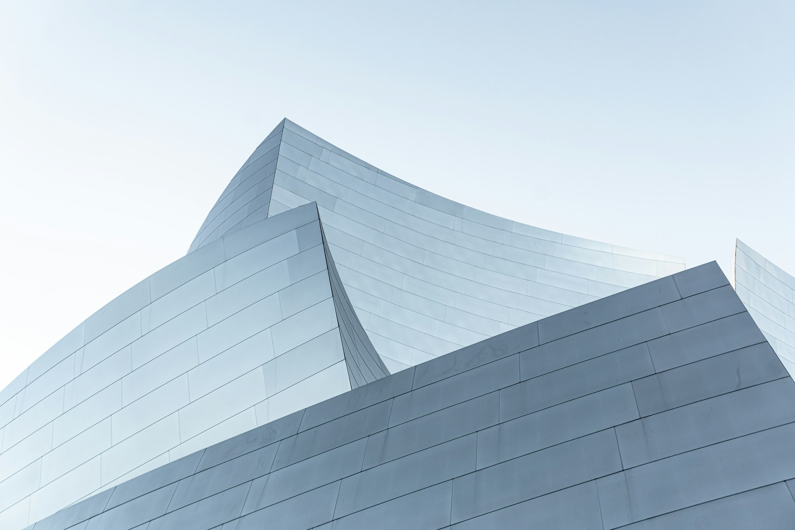
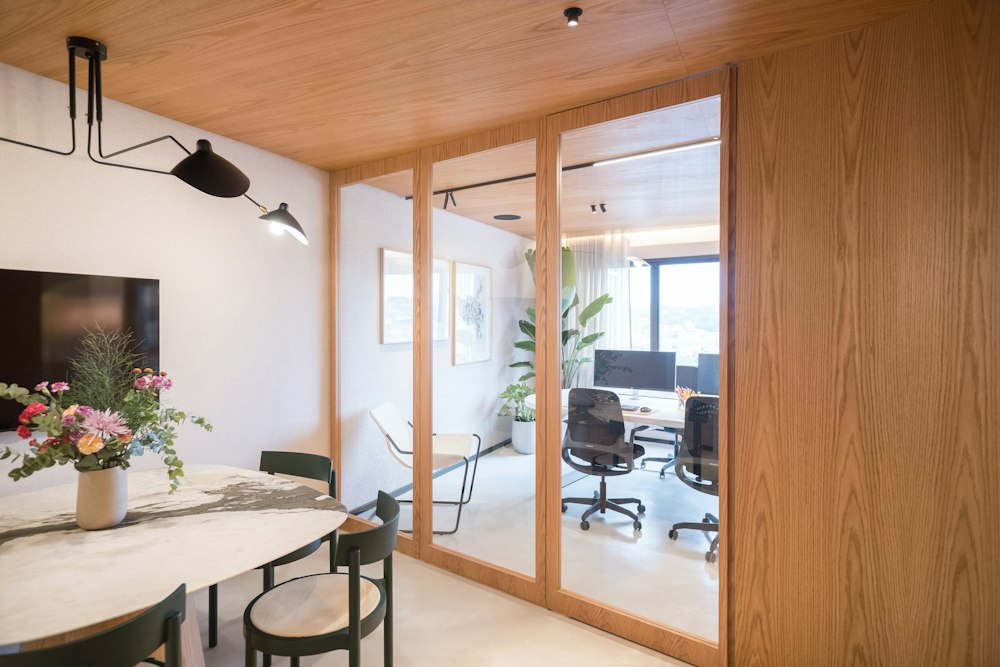
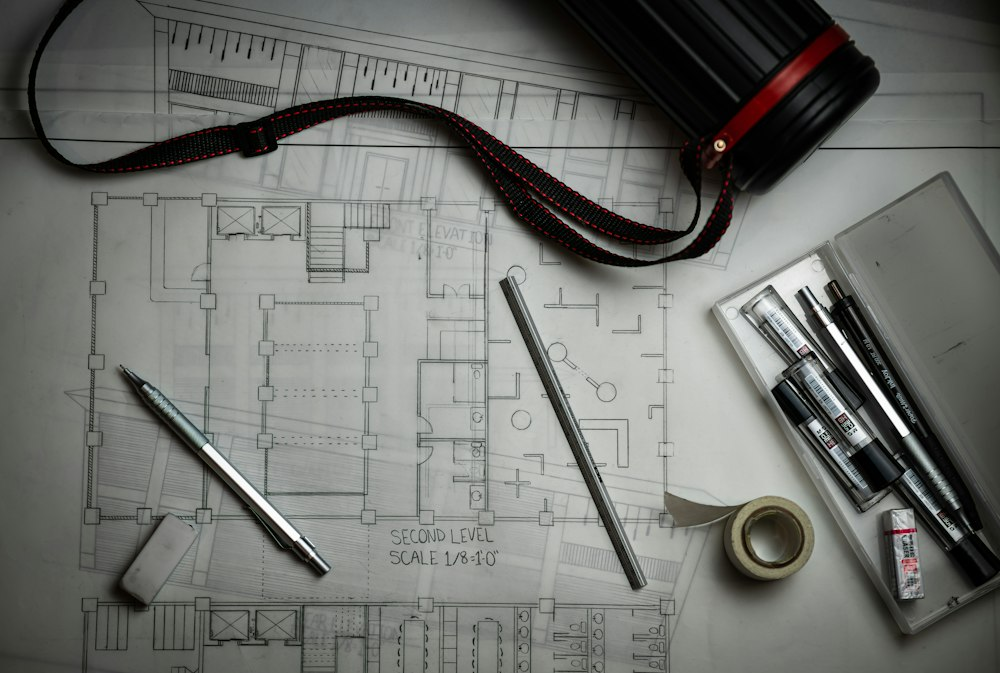
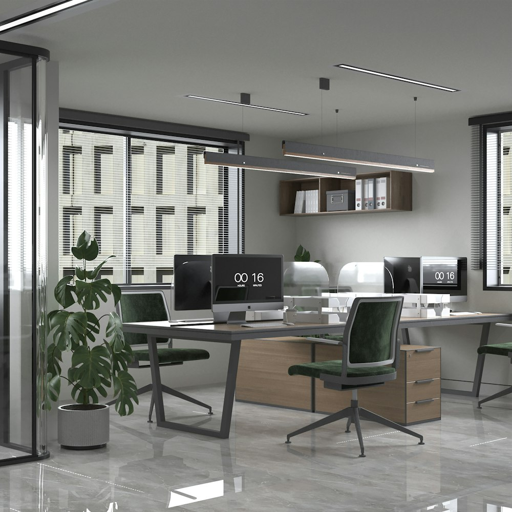
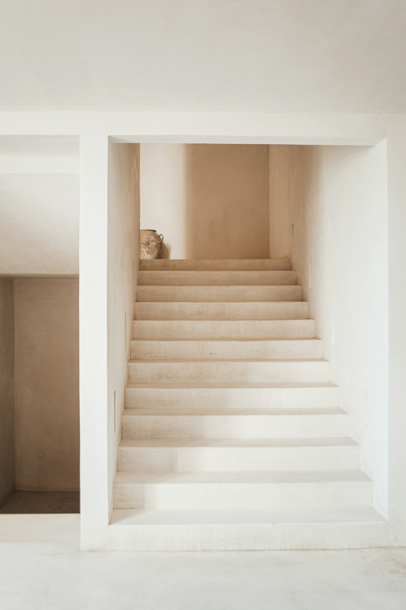

Service
SERVICE
事業内容

Approach
対話から、
設計は始まる。
SILENZIOでは、ヒアリングに最も時間をかけます。暮らし方、働き方、大切にしたい時間。言葉にならない部分まで汲み取りながら、そのご家族・その企業にしか成立しない設計をご提案します。
建築設計・インテリアデザイン・リノベーションの3つの領域を、それぞれ専門チームが連携しながらワンストップで手がけられることが、私たちの強みです。

01
ARCHITECTURE建築設計
住宅・店舗・オフィスなど、用途を問わず一棟一棟の敷地条件と向き合い、光・風・動線を丁寧に設計します。構造・意匠・法規のすべてに責任を持つ一級建築士事務所として、企画から確認申請、竣工検査まで一貫して対応いたします。
- 企画・基本設計・実施設計
- 構造設計・確認申請対応
- 施工会社選定サポート・工事監理

02
INTERIORインテリアデザイン
素材の質感や光の反射まで計算した空間づくりを行います。既製品に頼らない造作家具の設計・製作も可能で、建築とインテリアを切り離さず、ひとつの世界観として仕上げます。
- 空間コンセプト設計・素材選定
- 造作家具・照明計画
- 店舗・オフィスのブランディング連動デザイン

03
RENOVATIONリノベーション
既存の構造や記憶を丁寧に読み解き、そこに新しい価値を重ねていきます。耐震性能の見直しから水回りの刷新、間取りの再編まで、建物の可能性を最大限に引き出します。
- 耐震診断・断熱性能の見直し
- スケルトンリノベーション
- 店舗・オフィスの原状回復設計
Flow
ご依頼から竣工までの流れ
お問い合わせ
フォームまたはお電話にてご相談内容をお伺いします。
現地調査・企画提案
敷地・建物を拝見し、ラフプランとお見積りをご提示します。
設計
基本設計から実施設計まで、打ち合わせを重ねて仕上げます。
施工管理
設計者自らが現場に立ち会い、品質を確認します。
引き渡し・アフター
竣工検査後にお引き渡し。以降も定期的にご相談を承ります。